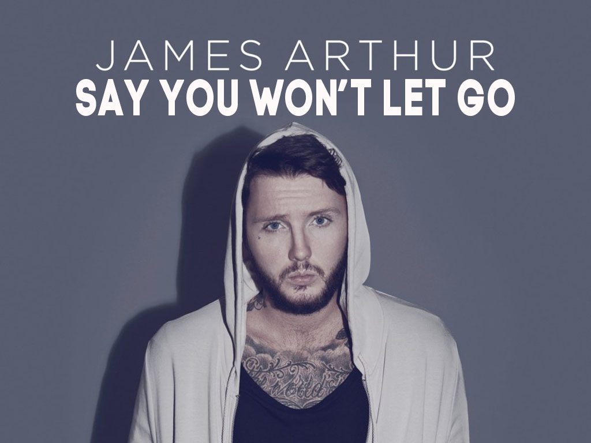
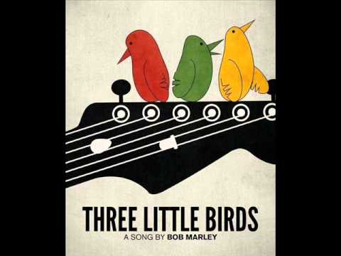
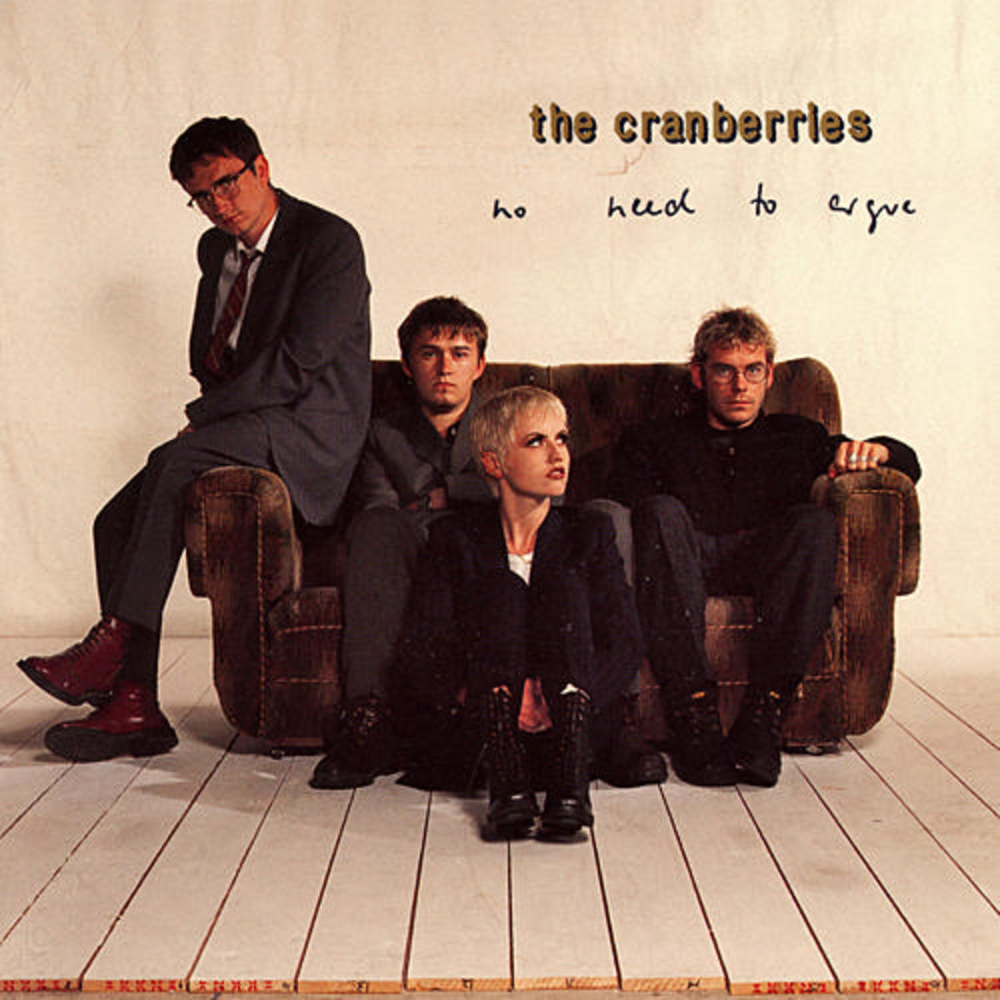
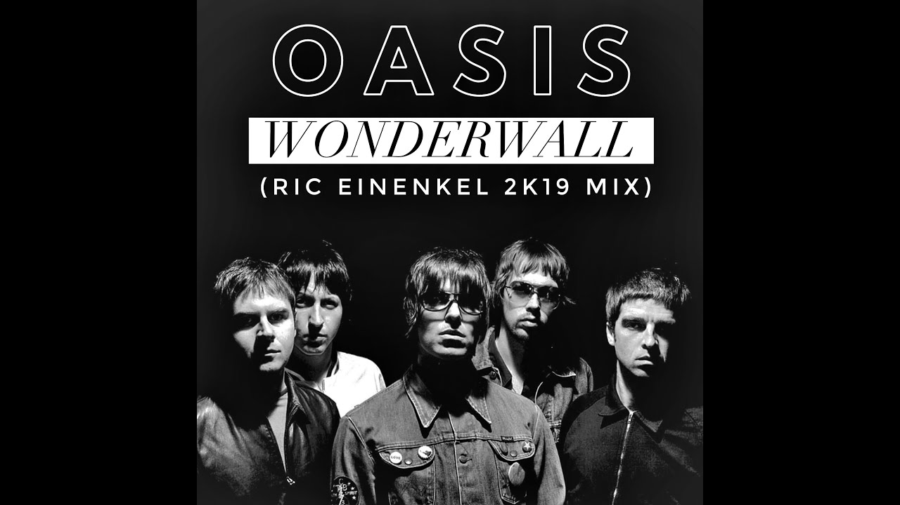

"We Don't Talk Anymore " is a song by American singer Charlie Puth featuring Selena Gomez, from Puth's debut studio album Nine Track Mind (2016). The artists wrote the song with Jacob Kasher, Puth produced the song.

"Say You Won't Let Go" has topped charts in several countries, including the UK, Australia, Indonesia, New Zealand and Sweden. James Arthur revealed in an interview that: "I wanted to write the type of song that guys would want to play for their girlfriends." "A lot of "Say You Won't Let Go" came from imagination.

"Love Yourself" is a song recorded by Canadian singer Justin Bieber for his fourth studio album Purpose (2015). The song was released as a promotional single on November 9, 2015, and as the album's third official single on December 7, 2015. It was written by Ed Sheeran, Benjamin Levin and Bieber, and produced by Levin. A pop song, "Love Yourself" features an electric guitar and a brief flurry of trumpets as its main instrumentation. During the song, Bieber uses a husky tone in the lower registers. Lyrically, the song is a kiss-off to a narcissistic ex-lover who did the protagonist wrong.

Bob Marley "Is This Love" official video from Bob Marley & The Wailers' 1978 album, 'Kaya.' Subscribe to the channel to never miss an update: http://bobmarley.lnk.to/Subscribe. Is This Love, which has been remastered in HD, was filmed at the Keskidee Youth Centre in London and features a special appearance by a then 9-year-old Naomi Campbell.

“One Day” is an anthem promoting world peace and unity, performed by Matisyahu and co-written with The Smeezingtons. Originally released as a single in 2008, the song was later featured on Matisyahu’s third studio album, Light, in 2009.

"Three Little Birds" is a song by Bob Marley and the Wailers. It is the fourth track on side two of their 1977 album Exodus and was released as a single in 1980. The song reached the Top 20 in the UK, peaking at number 17. It is one of Marley's most popular songs and has been covered by numerous other artists.

The lyrics are diverse and in many cases symbolic, with listeners interpreting them as referring to subjects as diverse as gun violence, illicit drug use, Kobain’s then-girlfriend and mood swings. “Smells Like Teen Spirit” was written by Dave Grohl, Kurt Cobain, and Krist Novoselic.

Lead singer Dolores O'Riordan claimed that "Zombie" speaks about "the Irish fight for independence that seems to last forever.". The lyrics even say, "It's the same old theme since 1916.". Like the responsive works of Yeats, Heaney and U2, the Cranberries claim they wrote "Zombie" to be a "song for peace, peace among England and Ireland."

The song's final title was inspired by George Harrison's solo album Wonderwall Music. The song was recorded at Rockfield Studios in Wales, during a two-week recording of the Morning Glory album in May 1995. Morris produced the song in a half-day along with Gallagher, using a technique known as "brickwalling" to intensify the sound of the song.